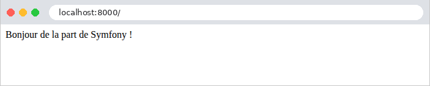
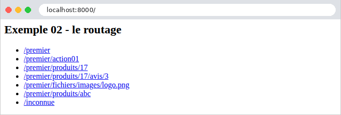
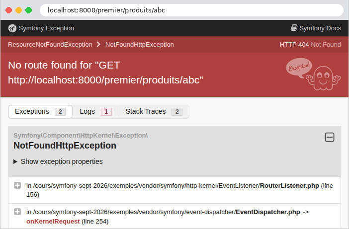
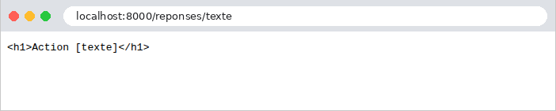
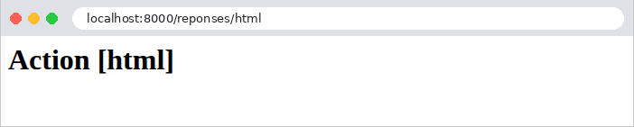
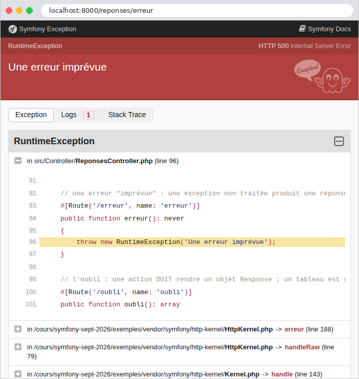
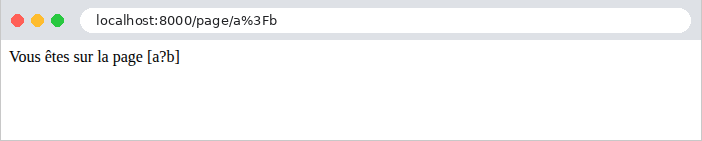

2. Actions, routage, réponses
Ce chapitre étudie le chemin d'une requête, du navigateur jusqu'à l'action qui la traite, et la réponse que renvoie cette action. Les vues n'apparaîtront qu'au chapitre 4 : ici, les actions renvoient directement du texte ou du JSON.
2.1. Exemple 01 : la structure d'une application Symfony
Le premier exemple est la plus petite application [Symfony] possible. Un projet créé par [composer create-project symfony/skeleton] contient une vingtaine de fichiers et de dossiers, et un projet créé par [symfony new --webapp] bien davantage (cf. introduction) ; nous n'en gardons ici que ceux dont l'application ne peut pas se passer :
- [public/index.php] : le point d'entrée de l'application. Toutes les requêtes HTTP, quelle que soit leur URL, sont confiées à ce fichier. Le dossier [public] est le seul dossier que le serveur web publie : il contient aussi les fichiers statiques (feuilles de style, images, scripts), et seulement eux ;
- [src/Kernel.php] : le noyau de l'application, qui l'assemble et traite les requêtes. Le dossier [src] contient toutes les classes de l'application ;
- [config] : la configuration de l'application : la liste de ses bundles ([bundles.php]) et la configuration de chacun (dossier [packages]) ;
- [var] : les fichiers que l'application écrit pendant son fonctionnement : le cache (dossier [var/cache]), où [Symfony] range la configuration compilée, et, plus tard, les sessions. Ce dossier est créé par [Symfony] à la première requête ;
- [.env] : les réglages de l'application, sous forme de couples [NOM=valeur] ;
- [bin/console] : l'outil en ligne de commande de [Symfony] ;
- [composer.json] : la description du projet pour [Composer].
2.1.1. Le point d'entrée : public/index.php
- ligne 1 : un fichier [PHP] commence par la balise [<?php]. Tout ce qui la suit est du code [PHP] ; un fichier qui ne contient que du code ne la referme pas ;
- ligne 2 : un commentaire, de [//] jusqu'à la fin de la ligne ([/* ... */] délimite un commentaire sur plusieurs lignes) ;
- lignes 4-7 : l'instruction [use] importe un nom de classe. Le nom complet d'une classe [PHP] comprend son espace de noms (namespace), l'équivalent des paquets de [Java] : [Symfony\Component\HttpFoundation\Request] est la classe [Request] de l'espace de noms [Symfony\Component\HttpFoundation]. Après le [use], le fichier peut écrire simplement [Request]. Les noms des classes de [Symfony] disent d'où elles viennent : [Component\HttpFoundation], le composant qui représente les requêtes et les réponses HTTP ; [Component\Dotenv], celui qui lit le fichier [.env] ; [Component\ErrorHandler], celui qui traite les erreurs. [App\Kernel] est une classe de l'application elle-même ;
- ligne 11 : [require] exécute un autre fichier [PHP]. [__DIR__] est le dossier du fichier en cours (ici [public]) ; [dirname(__DIR__, 2)] remonte de deux niveaux, jusqu'au dossier [exemples] ; l'opérateur [.] concatène deux chaînes. Le fichier [vendor/autoload.php], écrit par [Composer], installe le chargeur de classes : la première fois qu'une classe est utilisée, il trouve et charge le fichier qui la définit. Grâce à lui, on n'écrit jamais de [require] pour les classes. Le dossier [vendor] est celui du dossier [exemples], partagé par tous les exemples (cf. introduction). Un [require] rend la valeur du fichier exécuté : [vendor/autoload.php] rend le chargeur, rangé dans la variable [$chargeur]. En [PHP], le nom d'une variable commence toujours par [$] ;
- ligne 12 : le chargeur de classes de [Composer] connaît les classes des bibliothèques du dossier [vendor]. Il doit aussi connaître celles de l'application, rangées par convention dans son dossier [src], sous l'espace de noms [App]. Dans un projet ordinaire, [Composer] l'apprend du fichier [composer.json] du projet. Nos exemples partagent un seul dossier [vendor], mais chacun a son propre dossier [src] : chaque exemple le déclare donc lui-même au chargeur, par sa méthode [addPsr4] (la norme [PSR-4] fait correspondre les espaces de noms et les dossiers : la classe [App\Controller\PremierController] est dans le fichier [src/Controller/PremierController.php]). L'opérateur [->] désigne un membre d'un objet. Dans une chaîne entre apostrophes, [\\] désigne un seul caractère [\] ;
- ligne 15 : [new Dotenv()] crée un objet de la classe [Dotenv], dont la méthode [bootEnv] lit le fichier [.env] (présenté plus loin) et range ses variables dans les tableaux [$_SERVER] et [$_ENV] de [PHP], où l'application les trouvera ;
- lignes 18-20 : le mode debug (le fichier [.env] le déduit de l'environnement, cf. plus loin). [Debug::enable()] transforme toute erreur [PHP], même un simple avertissement, en exception, affichée par une page d'erreur détaillée (exemple 03). [::] désigne un membre d'une classe : [enable] est une méthode statique, que l'on appelle sur la classe, sans objet ;
- ligne 23 : la création du noyau de l'application, un objet de la classe [App\Kernel], avec deux paramètres : l'environnement ([dev]) et le mode debug ([true]). [(bool)] convertit la valeur en booléen ;
- ligne 24 : [Request::createFromGlobals()] fabrique un objet [Request] à partir de la requête HTTP reçue par [PHP] ([PHP] la range dans ses tableaux « superglobaux » [$_GET], [$_POST], [$_COOKIE], [$_SERVER]...) ;
- ligne 25 : le noyau traite la requête ([handle]), et rend un objet [Response]. C'est là que tout se passe : le noyau démarre (il assemble ses bundles et construit ses services), cherche l'action chargée de la requête, l'exécute, et récupère la réponse qu'elle produit ;
- ligne 26 : la réponse est envoyée au navigateur : le code de statut, les entêtes, puis le corps ;
- ligne 27 : le noyau termine la requête : il exécute les traitements qui peuvent attendre que la réponse soit partie (chapitre sur le cycle de vie).
Ces quatre lignes résument [Symfony] : une requête entre, une réponse sort. Toute l'application est une fonction qui transforme un objet [Request] en objet [Response]. Ce fichier est le même pour tous les exemples. Il met aussi en lumière une particularité de [PHP] : l'application est reconstruite à chaque requête. Le serveur web exécute [public/index.php] du début à la fin pour chaque requête reçue : il charge les classes, construit le noyau, traite la requête, envoie la réponse, puis oublie tout. Aucun objet ne survit d'une requête à la suivante. Nous verrons, au chapitre sur les portées des données, les conséquences de ce fonctionnement, qui est l'opposé de celui de [Java], de [C#] ou de [Python], dont les applications restent en mémoire entre deux requêtes.
Construire le noyau à chaque requête coûterait cher, s'il fallait chaque fois relire et interpréter toute la configuration. [Symfony] ne le fait qu'une fois : il compile sa configuration en code [PHP], rangé dans le dossier [var/cache/dev] (pour l'environnement [dev]), qu'il réutilise ensuite. En mode debug, il vérifie à chaque requête si un fichier de configuration a changé, et recompile si nécessaire.
Un projet [Symfony] ordinaire a un fichier [public/index.php] plus court, qui confie ce travail au composant [Runtime] de [Symfony] (l'étude de cas l'utilise) : nous avons préféré l'écrire en entier, pour voir ce qui se passe.
2.1.2. Le noyau : src/Kernel.php
- ligne 4 : l'espace de noms de la classe. Son nom complet est donc [App\Kernel] ;
- ligne 11 : la classe [Kernel] de l'application hérite ([extends]) de la classe [Kernel] de [Symfony], importée sous le nom [BaseKernel] (le mot-clé [as] de la ligne 8 renomme l'importation, puisque les deux classes portent le même nom). C'est elle qui sait traiter une requête ([handle]) ;
- ligne 15 : l'instruction [use], à l'intérieur d'une classe, n'importe pas un nom : elle incorpore un trait, un morceau de classe réutilisable. [MicroKernelTrait] donne au noyau son comportement standard : il lit la liste des bundles dans [config/bundles.php], leur configuration dans le dossier [config/packages], les services dans [config/services.yaml] (exemple 06) et les routes dans [config/routes.yaml] (exemple 02). Il cherche aussi des routes dans la classe [Kernel] elle-même : c'est ce qui permet à ce premier exemple de s'y réduire ;
- lignes 19-24 : une action, une méthode publique qui traite une requête. L'attribut [#[Route('/')]] l'associe au chemin [/] : c'est le routage. Un attribut [PHP], écrit [#[...]], est une information attachée au code (une classe, une méthode, un paramètre), que [PHP] ignore mais que les bibliothèques lisent : l'équivalent des annotations de [Java] ou des décorateurs de [Python]. [Symfony] en fait un usage intensif ;
- ligne 20 : [: Response] déclare le type de la valeur rendue. Les types sont facultatifs en [PHP], mais, quand ils sont écrits, [PHP] les vérifie à l'exécution ;
- ligne 23 : l'action rend un objet [Response], dont le premier paramètre est le corps de la réponse. C'est la règle de [Symfony] : une action rend toujours un objet [Response] (exemple 03).
2.1.3. La configuration : config/bundles.php, config/packages/framework.yaml et .env
[Symfony] est fait de bundles : des paquets qui intègrent une fonctionnalité dans l'application (les vues [Twig], la sécurité, l'accès aux bases de données...). La liste des bundles de l'application est dans le fichier [config/bundles.php] :
Le fichier rend un tableau associatif : pour chaque bundle, désigné par le nom de sa classe ([FrameworkBundle::class] est le nom complet de la classe, sous forme de chaîne), les environnements où il est actif (ici, tous). Notre application n'a qu'un bundle, le FrameworkBundle, le cœur du framework, qui assemble les composants de base : requêtes et réponses, noyau, routage, conteneur de services, console... Les exemples suivants en ajouteront d'autres. Chaque bundle a sa configuration, dans le dossier [config/packages], un fichier par bundle, écrit en [YAML] :
[YAML] est un format de texte qui décrit des données par l'indentation : [framework] (la clé du FrameworkBundle) contient la clé [secret]. Les lignes qui commencent par [#] sont des commentaires. La valeur [%env(APP_SECRET)%] est une référence à la variable [APP_SECRET], lue dans l'environnement du processus, ou, à défaut, dans le fichier [.env] :
- ligne 3 : l'environnement de l'application : [dev] pour le développement, [prod] pour la production (et [test] pour les tests automatiques). L'environnement choisit la configuration : un fichier [config/packages/prod/xxx.yaml] ne serait lu qu'en production. Il fixe aussi le mode debug, actif par défaut sauf en production (la variable [APP_DEBUG] permettrait de le fixer autrement) : une exception non traitée affiche alors une page détaillée (exemple 03), et [Symfony] recompile sa configuration dès qu'elle change. Ce mode est fait pour le développement, et seulement pour lui : la page d'erreur révèle le code source et la configuration de l'application ;
- ligne 5 : la clé secrète de l'application : une chaîne aléatoire, que [Symfony] utilise pour signer certaines données (les liens de connexion, les jetons de protection anti-CSRF...). Chaque exemple a la sienne.
Contrairement à ce que l'on fait avec d'autres frameworks, le fichier [.env] d'un projet [Symfony] est d'ordinaire publié avec le code source : il contient les valeurs par défaut des variables, convenables pour le développement. Les valeurs propres à une installation (un mot de passe, la clé secrète de production) vont dans un fichier [.env.local], lu après lui, qui, lui, n'est jamais publié ; en production, on les fournit plutôt par de vraies variables d'environnement, qui l'emportent sur les deux fichiers. Tout ce que la configuration ne précise pas garde sa valeur par défaut, définie par chaque bundle. La commande [php bin/console config:dump-reference framework] affiche toutes les clés possibles du FrameworkBundle, avec leurs valeurs par défaut (plusieurs centaines de lignes).
2.1.4. L'outil bin/console et le fichier composer.json
Le fichier [bin/console] est un script [PHP], qui construit le noyau, comme [public/index.php], mais pour exécuter une commande plutôt que traiter une requête :
- ligne 1 : sous [Linux] et [macOS], cette ligne permet d'exécuter le fichier directement ([./bin/console]) ; sous [Windows], on écrit toujours [php bin/console] ;
- ligne 17 : la classe [Application] du FrameworkBundle est une application en ligne de commande, construite sur le noyau : elle en connaît les services et la configuration. [ArgvInput] représente les paramètres de la ligne de commande ; [run] exécute la commande demandée.
[php bin/console list] affiche la liste des commandes disponibles : une quarantaine dans cet exemple, davantage à mesure que l'on ajoute des bundles. Nous en utiliserons plusieurs, dont [debug:router], [debug:container] et [cache:clear]. Le fichier [composer.json], enfin, décrit l'exemple :
C'est un document JSON. Il n'est pas là pour [Composer] (les bibliothèques des exemples sont décrites par le fichier [exemples/composer.json], cf. introduction), mais pour le noyau : [Symfony] cherche le dossier du projet en remontant, depuis le fichier [src/Kernel.php], jusqu'au premier dossier qui contient un fichier [composer.json]. C'est à partir de lui qu'il trouve tous les autres ([config], [var], [templates]...). Le fichier [composer.json] d'un projet ordinaire contient aussi la liste de ses bibliothèques, et la règle PSR-4 de ses classes (lignes 5-9), que nos exemples déclarent eux-mêmes au chargeur (ligne 12 de [public/index.php]).
2.1.5. Exécution
Dans un terminal ouvert sur le dossier [01-structure], on tape [php -S localhost:8000 -t public]. [PHP] affiche :
L'option [-S] lance le serveur de développement intégré à [PHP]. Il écoute sur le port 8000 de la machine elle-même ([localhost]) : il n'accepte que les requêtes venues de cette machine, ce qui convient au développement ([-S 0.0.0.0:8000] l'ouvrirait aux autres machines du réseau). L'option [-t public] fait du dossier [public] la racine du site : un fichier qui existe dans ce dossier est envoyé tel quel ; toute autre URL est confiée à [public/index.php]. On l'arrête par [Ctrl-C]. Ce serveur est fait pour le développement : en production, ce sera un serveur web comme [Apache] ou [Nginx], associé à [PHP-FPM] (cf. étude de cas). Il n'est pas nécessaire de le relancer après une modification du code ou de la configuration : puisque [PHP] relit les fichiers à chaque requête, la modification est prise en compte à la requête suivante. ([Symfony] propose aussi son propre outil, le programme [symfony], dont la commande [symfony serve] lance un serveur plus complet ; il est présenté en annexe.)
Demandons l'URL [http://localhost:8000/] avec un navigateur :

puis avec [curl]. L'option [-i] affiche aussi les entêtes HTTP de la réponse :
La première ligne de la réponse est la version du protocole, le code de statut, 200, et son libellé, [OK]. Viennent ensuite les entêtes : l'hôte demandé, [Connection: close] (le serveur de développement ferme la connexion après chaque réponse), la version de [PHP], une consigne de cache (par défaut, [Symfony] interdit aux intermédiaires de garder la réponse en cache), la date, le type du contenu, et [X-Robots-Tag: noindex], qui demande aux moteurs de recherche de ne pas indexer la page ([Symfony] l'ajoute en mode debug : un site en développement n'a pas à être indexé). Une ligne vide sépare les entêtes du corps de la réponse. Dans la suite du document, nous ne reproduirons plus les entêtes [Host], [Connection], [X-Powered-By], [Cache-Control], [Date] et [X-Robots-Tag], qui ne varient pas.
L'entête [Content-Type: text/html; charset=UTF-8] indique que la réponse est du HTML, dont les caractères sont codés en UTF-8. C'est le choix de [Symfony] pour une réponse dont l'action n'a pas précisé le type : le navigateur interprète donc la chaîne comme du HTML (ici, sans balise, elle s'affiche telle quelle). L'exemple 03 montrera comment annoncer un autre type. La réponse ne dépose aucun cookie : [Symfony] ne crée de session que lorsque l'application s'en sert (chapitre sur les portées).
À chaque requête, la console du serveur affiche quelques lignes de journal : l'arrivée de la connexion, un message de [Symfony], qui indique la route choisie, puis le code de la réponse, la méthode et le chemin.
Le message [[info] Matched route] vient du journal (logger) de [Symfony] : sans bibliothèque de journalisation installée, [Symfony] écrit ses messages sur la sortie d'erreur du processus, que le serveur de développement affiche. La route a reçu un nom calculé par [Symfony], [app_kernel_accueil], à partir du nom de la classe et de celui de la méthode : l'exemple suivant nommera ses routes lui-même. Après cette première requête, le dossier [var/cache/dev] contient la configuration compilée : le conteneur de l'application ([App_KernelDevDebugContainer.php], exemple 06), et la table des routes ([url_matching_routes.php]).
2.2. Exemple 02 : le routage
Le routage associe une URL et une méthode HTTP (GET, POST...) à une action. Écrire toutes les actions dans le noyau deviendrait vite illisible : on les range dans des classes, les contrôleurs. L'exemple 02 en a deux :
Les fichiers [public/index.php], [bin/console], [composer.json], [.env], [config/bundles.php] et [config/packages/framework.yaml] sont ceux de l'exemple 01 : nous ne les citerons plus (seuls changent le nom de l'exemple et la clé secrète). Le noyau [src/Kernel.php] n'a plus d'action : il se réduit à sa classe et à son trait. Chaque contrôleur est une classe de l'espace de noms [App\Controller], dans le dossier [src/Controller] : c'est la convention de [Symfony], et la norme [PSR-4] fait correspondre les deux (exemple 01).
2.2.1. Le contrôleur AccueilController
- ligne 4 : l'espace de noms de la classe. Son nom complet est donc [App\Controller\AccueilController] ;
- ligne 9 : la classe. Par convention, un nom de classe s'écrit avec une majuscule à chaque mot ([AccueilController]), un nom de méthode ou de variable avec une minuscule au premier mot ([action01Post]). Un contrôleur [Symfony] n'a besoin d'hériter d'aucune classe (l'exemple suivant présentera la classe mère que l'on utilise d'ordinaire) ;
- ligne 12 : l'attribut [#[Route]] de l'action, avec trois paramètres, dont deux nommés : la valeur est associée au paramètre par son nom ([name: 'accueil']), et non par sa position. Le chemin [/], le nom de la route ([accueil]), qui permettra de fabriquer son URL (exemple 04), et les méthodes HTTP acceptées : [methods: ['GET']]. En [PHP], [[a, b]] est un tableau (array). Sans le paramètre [methods], la route accepterait toutes les méthodes ;
- ligne 13 : l'action [index], une méthode publique de la classe ;
- lignes 15-26 : une chaîne sur plusieurs lignes. La syntaxe [<<<'HTML'] ... [HTML] (nowdoc) délimite un texte écrit tel quel, entre deux lignes portant le même mot, ici [HTML] ; l'indentation de la ligne de fin est retirée de toutes les lignes. L'action rend du HTML, envoyé avec le type [text/html] (cf. exemple 01).
L'action [index] renvoie ainsi une page HTML qui contient des liens vers les actions de l'autre contrôleur :

2.2.2. Le contrôleur PremierController
- lignes 10-13 : un attribut [#[Route]] placé sur la classe donne un préfixe aux routes de toutes ses actions : [/premier] pour leurs chemins, [premier_] pour leurs noms. L'URL d'une action est la concaténation du préfixe et du chemin de sa route ;
- lignes 16-20 : le chemin [''] désigne le préfixe lui-même : [GET /premier] ;
- lignes 23-34 : le même chemin, pour deux méthodes HTTP : [GET] et [POST], traitées par deux actions différentes. Le nom d'une action est libre : c'est l'attribut [#[Route]] qui l'associe à une URL et à une méthode HTTP. [methods: ['GET', 'POST']] associerait les deux méthodes à une même action ;
- lignes 39-43 : [{id}] est un paramètre de route : ce segment de l'URL peut prendre plusieurs valeurs. Le paramètre [$id] de l'action reçoit sa valeur : pour l'URL [/premier/produits/17], il vaut 17. Par défaut, un paramètre de route accepte n'importe quel texte sans barre oblique ; le paramètre [requirements] le contraint : l'expression régulière [\d+] (un ou plusieurs chiffres, [\d] désignant un chiffre et [+] la répétition) n'accepte que des chiffres. Sinon, la route ne correspond pas. Le type [int] du paramètre de l'action demande à [Symfony] de convertir la valeur (une chaîne, extraite de l'URL) en entier. C'est la liaison de données (data binding), que le chapitre suivant étudiera en détail. Dans la chaîne entre guillemets ["Produit n° $id"], la variable [$id] est remplacée par sa valeur : c'est l'interpolation (une chaîne entre apostrophes, elle, est écrite telle quelle) ;
- lignes 47-51 : deux paramètres de route, passés à deux paramètres de l'action. [Symfony] les associe par leur nom : l'ordre des paramètres de l'action n'a pas d'importance. Les contraintes sont écrites cette fois dans le chemin lui-même, entre [<] et [>] : c'est plus court ;
- lignes 55-60 : un paramètre de route qui contient des [/]. La classe [Requirement] de [Symfony] réunit, sous forme de constantes, les expressions régulières les plus courantes : [Requirement::CATCH_ALL] ([.+] : n'importe quels caractères, barres obliques comprises), [Requirement::DIGITS] ([[0-9]+]), [Requirement::UUID], [Requirement::DATE_YMD]...
2.2.3. La configuration : config/routes.yaml et config/services.yaml
Il reste à dire à [Symfony] où sont les routes :
Le fichier [config/routes.yaml] décrit les routes de l'application, ou, comme ici, dit où les trouver. La clé [controllers] est un nom libre. La ressource [routing.controllers] désigne les routes déclarées par les attributs [#[Route]] des contrôleurs que connaît l'application. Et c'est le fichier [config/services.yaml] qui les lui fait connaître :
Ce fichier déclare les services de l'application : les objets que [Symfony] sait fabriquer lui-même (exemple 06). Les lignes 10-11 font de chaque classe du dossier [src] un service. Grâce à la ligne 8 ([autoconfigure]), [Symfony] examine chacune : une classe dont une méthode porte un attribut [#[Route]] devient un contrôleur, et ses routes sont ajoutées à la table de routage. Nous n'écrirons presque plus ces deux fichiers : ils sont les mêmes dans tous les exemples.
2.2.4. Exécution
Voici les réponses à quelques requêtes :
Pour envoyer une requête POST, on utilise l'option [-X POST] de [curl] :
La requête POST est acceptée telle quelle : [Symfony] n'a pas de protection anti-CSRF qui s'appliquerait à toutes les requêtes. Il protège les formulaires, un par un, grâce à son composant Form (exemple 18). Une méthode HTTP qu'aucune action ne traite pour ce chemin produit une erreur 405 ([Method Not Allowed]). L'entête [Allow] indique les méthodes acceptées :
En mode debug, le corps de la réponse est la page d'erreur détaillée de [Symfony], que nous verrons à l'exemple 03, précédée d'un commentaire HTML qui résume l'erreur. Les deux entêtes [X-Debug-Exception] en donnent aussi le message et l'endroit, encodés comme dans une URL ([%20] pour un espace...) : ils sont faits pour les outils de développement. Une route [GET] accepte aussi la méthode [HEAD] (la même requête que GET, sans le corps de la réponse), que [Symfony] traite lui-même.
Une URL qu'aucune route ne traite produit une erreur 404. C'est aussi le cas d'un identifiant qui n'est pas un nombre : la contrainte [\d+] empêche la route de correspondre à [/premier/produits/abc].
Dans un navigateur, en mode debug :

La page d'erreur de [Symfony] explique qu'aucune route ne correspond (« No route found »), et montre l'exception levée par le routeur, [NotFoundHttpException]. Le chapitre 7 montrera comment la remplacer par une page propre à l'application. Remarquons encore que [Symfony] distingue [/premier] de [/premier/] : la seconde URL n'a pas de route, mais, plutôt que de répondre par une erreur 404, [Symfony] redirige le navigateur (exemple 04) vers la première :
La commande [php bin/console debug:router], lancée dans le dossier de l'exemple, liste toutes les routes de l'application :
Chaque ligne donne le nom de la route, la méthode HTTP et le chemin. Les noms des routes de [PremierController] ont bien reçu le préfixe [premier_]. [php bin/console debug:router premier_produit] détaillerait une route (sa contrainte, son contrôleur) ; [php bin/console router:match /premier/produits/17] indique quelle route correspond à un chemin.
2.3. Exemple 03 : les réponses d'une action
Ce que renvoie une action détermine la réponse HTTP. L'exemple 03 passe en revue les principaux cas :
Le contrôleur [ReponsesController] associe chaque URL [/reponses/xxx] à une action :
1 2 3 4 5 6 7 8 9 10 11 12 13 14 15 16 17 18 19 20 21 22 23 24 25 26 27 28 29 30 31 32 33 34 35 36 37 38 39 40 41 42 43 44 45 46 47 48 49 50 51 52 53 54 55 56 57 58 59 60 61 62 63 64 65 66 67 68 69 70 71 72 73 74 75 76 77 78 79 80 81 82 83 84 85 86 87 88 89 90 91 92 93 94 95 96 97 98 99 100 101 102 103 104 105 | |
Commentons ce code :
- lignes 13-16 : le contrôleur hérite de la classe [AbstractController] du FrameworkBundle. C'est la classe mère que l'on donne d'ordinaire aux contrôleurs : elle leur fournit des raccourcis, des méthodes qui rendent les services les plus courants en une ligne : [json], [redirect], [redirectToRoute], [render], [createNotFoundException], [addFlash]... Nous les rencontrerons au fil des exemples ;
- ligne 15 : l'attribut de la classe donne à toutes les routes un préfixe de chemin, un préfixe de nom, et la méthode GET : chaque action n'a plus qu'à préciser son chemin et son nom ;
- lignes 19-24 : [new Response(...)] fabrique une réponse HTTP complète : le corps, le code de statut, puis les entêtes, dans un tableau associatif (un tableau dont chaque élément a une clé, ici ['Content-Type'], écrite devant la flèche [=>]). La classe [Response] définit une constante pour chaque code de statut : [Response::HTTP_OK] vaut 200. L'entête [Content-Type] annonce ici du texte brut ([text/plain]) : le navigateur n'interprétera pas les balises ;
- lignes 27-31 : la même chaîne, sans type annoncé : [Symfony] l'envoie avec le type [text/html], et le navigateur l'interprète ;
- lignes 35-39 : la méthode [json] d'[AbstractController] convertit son paramètre en JSON, et fabrique une réponse de type [application/json] (un objet [JsonResponse], une classe fille de [Response]). La conversion est faite par le composant Serializer de [Symfony], installé avec les exemples : un objet devient un objet JSON dont les champs sont ses propriétés publiques (et ce que rendent ses méthodes [getXxx], [isXxx], [hasXxx]). La classe [Personne] est présentée plus bas. L'action s'appelle [enJson] : si elle s'appelait [json], elle redéfinirait la méthode [json] héritée d'[AbstractController], et [PHP] refuserait la classe, les deux méthodes n'ayant pas les mêmes paramètres ;
- lignes 42-46 : un tableau [PHP] associatif devient un objet JSON. Le tableau [PHP] est une structure à tout faire : il est à la fois une liste et un dictionnaire ;
- lignes 49-53 : un tableau dont les clés sont implicites (0, 1, 2) est une liste ; il devient un tableau JSON ;
- lignes 56-62 : un tableau calculé. La fonction [sort] trie le tableau (elle le modifie lui-même) ; [array_map] applique une fonction à chaque élément, et rend le tableau des résultats. [fn (int $n) => $n * 10] est une fonction fléchée : une fonction anonyme réduite à une expression, dont elle rend la valeur ;
- lignes 65-69 : le second paramètre de [json] est le code de statut : 201 ([Created]) remplace 200. Un troisième paramètre, facultatif, fournirait des entêtes : [['X-Exemple' => '03']] ;
- lignes 72-76 : le code 204 ([No Content]) signifie « rien à afficher » : la réponse n'a pas de corps ([null]) ;
- lignes 79-83 : une erreur « prévue » : une réponse 404 ([Not Found]), avec un corps JSON choisi par l'action. Le texte est entre guillemets parce qu'il contient une apostrophe ;
- lignes 86-90 : la même erreur, produite par une exception. [createNotFoundException] fabrique une exception [NotFoundHttpException] (une exception HTTP, qui porte le code 404) ; l'instruction [throw] la lève, ce qui interrompt l'action. [Symfony] la transforme en réponse d'erreur. Le type [never] indique que la méthode ne se termine jamais normalement. C'est la façon la plus courante d'arrêter une action en erreur, même au fond d'une fonction appelée par l'action ;
- lignes 93-97 : une erreur « imprévue » : une exception que personne ne traite produit une réponse 500 ([Internal Server Error]). [RuntimeException] est une classe d'exception de la bibliothèque standard de [PHP], importée par un [use] (ligne 7) comme toute classe ;
- lignes 100-104 : l'erreur à ne pas commettre. Une action [Symfony] doit rendre un objet [Response] ; celle-ci rend un tableau, que [Symfony] refuse (nous verrons la réponse plus bas). C'est une différence avec d'autres frameworks, comme [Laravel], qui transforment eux-mêmes un tableau en JSON : [Symfony] préfère que l'action dise explicitement quelle réponse elle veut.
La classe [Personne] :
- ligne 8 : [readonly] rend toutes les propriétés de la classe non modifiables après leur initialisation : un objet [Personne] est immuable ;
- lignes 10-14 : [__construct] est le constructeur de la classe, appelé par [new Personne('Martin', 'Jean', 42)]. Ses paramètres précédés de [public] sont promus : chacun déclare une propriété de même nom, initialisée par le paramètre. Cette écriture évite de déclarer les propriétés, puis de les affecter une par une dans le corps du constructeur (qui est ici vide). Les propriétés sont publiques : le Serializer les voit. Rien n'oblige à ranger cette classe dans un dossier [Modele] : c'est un choix de ce document.
Reste le fichier [src/EventListener/JsonLisible.php] :
Par défaut, une réponse [JsonResponse] contient un JSON compact, sur une seule ligne, dont les caractères non ASCII sont écrits sous forme d'échappements : [créée] devient [cr\u00e9\u00e9e], ce qui est du JSON valide, mais peu lisible. Pour les exemples de ce cours, nous voulons un JSON lisible. Plutôt que de le demander dans chaque action, nous modifions toutes les réponses JSON de l'application, grâce au mécanisme central de [Symfony] : les événements.
Pour traiter une requête, le noyau de [Symfony] passe par une suite d'étapes, et, à chacune, il déclenche un événement : [kernel.request] quand la requête arrive, [kernel.controller] quand l'action a été choisie, [kernel.response] quand la réponse a été produite, etc. (le chapitre sur le cycle de vie les étudie toutes). Un écouteur (listener) est une classe que [Symfony] appelle à chaque événement d'un type donné ; il peut consulter, et modifier, ce que l'événement transporte. C'est ainsi que [Symfony] lui-même est construit : le routage, la sécurité, la session sont des écouteurs.
- ligne 13 : l'attribut [#[AsEventListener]] fait de la classe un écouteur de l'événement [kernel.response] (la constante [KernelEvents::RESPONSE]). Il n'y a rien d'autre à déclarer : la classe est un service (exemple 02), et [Symfony] lit ses attributs ([autoconfigure]) ;
- ligne 16 : un écouteur déclaré sur une classe est appelé par sa méthode [__invoke]. Elle reçoit l'événement, un objet [ResponseEvent], qui transporte la requête et la réponse ;
- lignes 18-24 : si la réponse est une réponse JSON (l'opérateur [instanceof] teste la classe d'un objet), l'écouteur change ses options d'encodage : caractères non ASCII et barres obliques écrits tels quels, présentation indentée. L'opérateur [|] combine les trois options, qui sont des constantes de [PHP] ; [setEncodingOptions] réencode les données de la réponse.
Les exemples 05 à 12 réutilisent cet écouteur. La commande [php bin/console debug:event-dispatcher kernel.response] liste les écouteurs de l'événement : on y trouve le nôtre, parmi ceux de [Symfony].
Dans un navigateur, la différence entre [text/plain] et [text/html] est visible :


Voici les réponses des autres actions :
L'objet a été converti en objet JSON, un champ par propriété publique. L'action [/reponses/tableau] produit exactement la même réponse.
La réponse de l'exception est la page d'erreur détaillée de [Symfony], celle de l'exemple 02, avec notre message. Quand le client demande une réponse JSON, par l'entête [Accept: application/json] (option [-H] de [curl]), [Symfony] adapte sa réponse d'erreur, qui devient un document JSON (grâce au Serializer) :
Le document suit la norme des « détails de problème » (RFC 7807) : un type, un titre, le code, et le détail (notre message). En mode debug, il contient aussi le nom de l'exception et la pile d'appels ([trace], la liste des fonctions en cours d'exécution au moment de l'erreur). Ce document n'est pas une [JsonResponse] fabriquée par une action : notre écouteur ne l'a donc pas mis en forme. L'entête [Vary: Accept] prévient les caches que la réponse dépend de l'entête [Accept] de la requête.
Reste l'exception imprévue. En mode debug, le navigateur affiche la page d'erreur de [Symfony] : le type et le message de l'exception, le fichier et la ligne où elle a été levée, avec le code qui l'entoure, puis la pile d'appels, de la plus récente à la plus ancienne :

La première fonction de la pile est notre action, [erreur], à la ligne 96 du fichier [ReponsesController.php]. Viennent ensuite les méthodes du noyau qui l'ont appelée ([HttpKernel::handleRaw], [HttpKernel::handle], [Kernel::handle]...), jusqu'à [public/index.php]. L'onglet Logs montre les messages du journal émis pendant la requête. C'est pour tout cela que le mode debug ne doit jamais être activé sur un serveur accessible à d'autres. L'erreur est aussi écrite dans le journal de l'application, c'est-à-dire, ici, dans la console du serveur :
Sans le mode debug ([APP_ENV=prod] dans le fichier [.env]), la même requête produit une courte page d'erreur, qui ne révèle rien du code :
et le document JSON ne contient plus que le code et son libellé (["detail":"Not Found"]), sans notre message ni la pile d'appels. Le chapitre 7 montrera comment afficher une page d'erreur propre à l'application. (Après un passage en production, il faut effacer le dossier [var/cache/prod], ou exécuter [php bin/console cache:clear] : en production, [Symfony] ne vérifie plus si sa configuration a changé.)
Enfin, l'action qui oublie de rendre un objet [Response] :
Le message est clair : « le contrôleur doit rendre un objet Response, mais il a rendu un tableau ». Nous verrons au chapitre sur le cycle de vie que ce n'est pas tout à fait vrai : un écouteur de l'événement [kernel.view] pourrait transformer lui-même le tableau en réponse.
2.4. Exemple 04 : les redirections
Une redirection est une réponse qui demande au navigateur d'aller chercher une autre URL : un code 3xx, et l'entête [Location], qui contient la nouvelle adresse. Le navigateur envoie aussitôt une seconde requête, vers cette adresse. Le contrôleur [RedirectionsController] :
- ligne 11 : un attribut [#[Route]] de classe sans chemin : il ne donne à toutes les routes que leur méthode, GET ;
- lignes 15-19 : la méthode [redirect] d'[AbstractController] fabrique une réponse de redirection (un objet [RedirectResponse]) vers l'adresse donnée. Le code 301 ([Moved Permanently]) signifie que la page a définitivement changé d'adresse : le navigateur (et les moteurs de recherche) peuvent retenir la nouvelle ;
- lignes 29-33 : sans second paramètre, [redirect] produit une redirection temporaire, de code 302 ([Found]). L'adresse est calculée en recollant des morceaux de texte (l'opérateur [.]), ce qui pose un problème, que nous allons voir ;
- lignes 37-41 : [redirectToRoute] fabrique une redirection vers une route, désignée par son nom (['page']), et non par son chemin. Le tableau associatif fournit les paramètres de la route (ici [nom]), correctement codés pour une URL. Si l'on change un jour le chemin de la route [page], les redirections vers elle suivront d'elles-mêmes ;
- ligne 44 : le nom de la route, [page], donné par l'attribut ;
- lignes 51-55 : une redirection vers un autre site : l'adresse est prise telle quelle.
Les réponses, avec [curl] (qui, sans option, ne suit pas les redirections) :
L'entête [Location] contient l'adresse telle que l'action l'a donnée, relative au site : le navigateur la complète avec le protocole, la machine et le port de la page en cours. La réponse a aussi un petit corps HTML, pour un client qui ne suivrait pas les redirections. L'option [-L] de [curl] suit la redirection, comme le ferait un navigateur :
Comparons maintenant les deux redirections calculées, avec une destination qui contient un point d'interrogation, codé [%3F] dans l'URL (un [?] non codé commencerait les paramètres de l'URL) :
[Symfony] a décodé le paramètre de route avant de le passer à l'action : [$destination] vaut [a?b]. La première action le recolle tel quel dans l'adresse : [/page/a?b], que le navigateur comprend comme le chemin [/page/a] suivi du paramètre [b]. La seconde passe par la route nommée, dont le paramètre est codé à nouveau : [/page/a%3Fb]. En suivant les redirections :
Seule la seconde arrive sur la bonne page. D'où la règle : une adresse qui contient une valeur variable se fabrique à partir du nom de sa route ([redirectToRoute], et, dans les vues, la fonction [path]), jamais en recollant des chaînes. Dans le navigateur, on ne voit que la page finale ; la barre d'adresse affiche la nouvelle URL :

Deux autres codes de redirection existent : 303 ([See Other]) et 307 ([Temporary Redirect]), que l'on obtient par [$this->redirect($url, 303)]. Après une requête POST, les codes 302 et 303 font envoyer par le navigateur une requête GET vers la nouvelle adresse, alors que 307 (et 308, la version permanente) lui font répéter la requête POST. L'exemple 20 utilisera la redirection après un POST.
2.5. Exemple 05 : les objets requête et réponse
Jusqu'ici, les actions ne recevaient que des paramètres de route, et rendaient une réponse construite d'une ligne. Une action peut aussi consulter la requête en cours, et construire sa réponse pièce par pièce. Le contrôleur [HttpController] :
- ligne 20 : l'action a un paramètre de type [Request]. Ce paramètre ne vient pas de l'URL : [Symfony] voit son type, et lui fournit l'objet [Request] de la requête en cours, celui que [public/index.php] a fabriqué (exemple 01). Le travail de préparation des paramètres d'une action est confié à des résolveurs d'arguments (argument value resolvers) : chacun sait fournir une sorte de paramètre (un paramètre de route, la requête, un service, les données d'un formulaire...). L'ordre des paramètres n'a pas d'importance : une action peut recevoir à la fois la requête et des paramètres de route ;
- lignes 22-29 : quelques méthodes de la requête : sa méthode HTTP, son chemin, son URL complète, ses paramètres bruts (la partie de l'URL qui suit le [?]), l'entête [User-Agent] (le navigateur), l'adresse IP du client. Les entêtes sont rangés dans la propriété [headers] de la requête, un « sac » d'entêtes dont la méthode [get] rend un entête par son nom. Les paramètres, un par un, seront l'objet du chapitre suivant ;
- lignes 34-39 : la réponse est d'abord créée, puis complétée : sa propriété [headers] est, elle aussi, un sac d'entêtes, où [set] ajoute l'entête [X-Exemple] (par convention, les entêtes propres à une application commencent souvent par [X-]) ;
- lignes 43-47 : la réponse construite en une fois : le corps, le code de statut et les entêtes ;
- lignes 52-62 : une réponse envoyée par morceaux (streaming). Un objet [StreamedResponse] reçoit une fonction, qui écrit elle-même le corps de la réponse, par [echo] (l'instruction de [PHP] qui écrit dans la réponse) ; [flush()] envoie aussitôt au navigateur ce qui a été écrit. La réponse ne connaît pas sa longueur à l'avance : le serveur envoie le code et les entêtes, puis chaque morceau dès qu'il est produit. C'est utile pour une réponse très longue, produite petit à petit. Mais une fois le premier morceau parti, le code de statut ne peut plus changer : ici, la fonction lève une exception après le premier morceau. C'est l'erreur à ne pas commettre : une réponse commencée ne peut plus devenir une réponse d'erreur.
L'écouteur [JsonLisible] est celui de l'exemple 03. Les réponses :
Les guillemets autour de l'URL empêchent le terminal d'interpréter le caractère [&]. On remarque que les paramètres ont été triés par ordre alphabétique : [getQueryString] et [getUri] rendent une forme normalisée de la chaîne de paramètres, qui permet de comparer deux URL (c'est utile, par exemple, pour un cache). Dans un navigateur, l'entête [User-Agent] est celui du navigateur.
Au bout d'une seconde, [curl] reçoit la suite : une page d'erreur. En mode debug, [Symfony] a tenté de répondre à l'exception par sa page d'erreur, avec le code 500 ; mais les entêtes étaient déjà partis, avec le code 200. Il n'a pu que recoller sa page d'erreur au bout du corps déjà commencé. Le client reçoit un code 200 et un corps incohérent ; sans le mode debug, il recevrait un corps simplement tronqué, sans aucun moyen de savoir qu'une erreur s'est produite. Seul le journal de l'application l'indique :
On remarque le code 200 de la réponse, dans la seconde ligne.
2.6. Exemple 06 : services partagés et injection de dépendances
Une action ne devrait pas contenir elle-même la logique de l'application : elle la délègue à des services, des objets qui savent faire une chose (lire des produits, calculer un panier...). Plusieurs actions utilisent souvent le même service. [Symfony], comme [Spring] ou [ASP.NET Core], possède un conteneur de services (service container) : un objet qui sait créer les services, et les fournir automatiquement à ceux qui en ont besoin. C'est l'injection de dépendances. Le conteneur est au cœur de [Symfony] : tout, dans le framework, est service (le routeur, le journal, la session, le moteur de vues...), et les contrôleurs de l'application eux-mêmes sont des services (exemple 02). L'exemple 06 organise son code par domaine (les produits, les clients), plutôt que par nature (contrôleurs, modèles) :
Rien n'oblige à ranger les contrôleurs dans [src/Controller] : toute classe du dossier [src] est un service (fichier [config/services.yaml]), et devient un contrôleur si elle porte des attributs [#[Route]] (exemple 02).
2.6.1. Le produit
- ligne 7 : une classe immuable (cf. exemple 03). Un objet immuable peut être partagé sans risque entre plusieurs parties du code ;
- lignes 9-15 : les propriétés, promues par le constructeur, avec leur type. Le prix est un entier, le prix en centimes (150 pour 1,50 €). C'est la façon classique de manipuler des montants en [PHP] : [PHP] n'a pas de type décimal ; un nombre à virgule, de type [float], est représenté en binaire, et ne sait pas représenter exactement 0,1 ou 3,2 (en binaire, ces nombres ont une infinité de chiffres) : une somme de prix en [float] peut donner 5,500000000000001. Une somme d'entiers, elle, est toujours exacte.
2.6.2. Le contrat du service : ProduitsService.php
- ligne 6 : le contrat du service : ce qu'il sait faire, sans dire comment. En [PHP], comme en [Java] ou en [C#], un contrat s'écrit par une interface : une liste de méthodes sans corps, qu'une classe qui implémente l'interface doit toutes écrire ;
- ligne 8 : un commentaire de documentation ([/** ... */]). Le type [array] ne dit pas ce que contient le tableau ; l'annotation [@return list<Produit>], que [PHP] ignore, le précise pour l'éditeur de code : une liste de produits ;
- ligne 12 : [?Produit] : un produit, ou [null] s'il n'existe pas.
2.6.3. L'implémentation : ProduitsServiceMemoire.php
- ligne 6 : la classe implémente le contrat, et écrit ses deux méthodes ;
- ligne 9 : une propriété privée : seul le code de la classe peut l'utiliser ;
- lignes 11-18 : le constructeur range les produits dans la propriété, désignée par [$this->produits] ([$this] est l'objet courant) ;
- lignes 20-24 : la méthode rend le tableau des produits. En [PHP], un tableau est une valeur, copiée quand on la transmet : l'appelant reçoit une copie, qu'il peut modifier sans toucher aux données du service (les objets [Produit], eux, ne sont pas copiés, mais ils sont immuables) ;
- lignes 26-30 : la fonction [array_find] ([PHP] 8.4) rend le premier élément d'un tableau pour lequel la fonction donnée rend [true], ou [null] s'il n'y en a aucun. [===] est l'égalité stricte : même valeur et même type.
2.6.4. Le contrôleur des produits : ProduitsController.php
- lignes 14-18 : le contrôleur a besoin du service : il le déclare comme paramètre de son constructeur. Quand [Symfony] crée le contrôleur (pour traiter une requête), il examine le type des paramètres du constructeur, et passe à chacun le service de ce type : c'est l'injection par le constructeur, et le réglage [autowire] du fichier [config/services.yaml] (présenté plus loin) qui l'autorise. Le paramètre, précédé de [private], est promu en propriété privée (cf. exemple 03) : les actions l'utilisent par [$this->service]. Le contrôleur ne connaît que le contrat du service (l'interface), pas son implémentation : il ignore que les produits sont en mémoire ;
- lignes 20-24 : l'action délègue le travail au service. Le tableau de produits rendu devient un tableau JSON (exemple 03) : chaque [Produit] devient un objet JSON ;
- lignes 26-34 : un produit inconnu produit une réponse 404, avec un message en JSON. La contrainte [<\d+>] du chemin (exemple 02) garantit que [$id] est un entier.
2.6.5. Le contrôleur des clients : ClientsController.php
- lignes 15-16 : ce contrôleur utilise le même service que celui des produits. Il le reçoit cette fois comme paramètre de l'action : [Symfony] injecte aussi les services dans les paramètres des actions, comme la requête de l'exemple 05. L'injection par le constructeur convient aux services dont toutes les actions ont besoin ; l'injection par l'action, à ceux d'une seule action ;
- ligne 20 : [array_reduce] réduit un tableau à une valeur : la fonction reçoit la valeur accumulée ([$somme]) et l'élément courant, et rend la nouvelle valeur accumulée ; le troisième paramètre est la valeur de départ, 0 ;
- lignes 21-22 : [count] rend le nombre d'éléments d'un tableau. Le total est rendu en centimes, et mis en forme en euros : [number_format] écrit un nombre avec deux décimales, la virgule comme séparateur décimal et l'espace comme séparateur des milliers (l'exemple 16 montrera une bien meilleure façon de mettre en forme des montants). La division [$total / 100] produit un [float], mais seulement pour l'affichage : les calculs, eux, ont été faits en entiers.
2.6.6. La déclaration du service : config/services.yaml
- lignes 4-10 : les réglages par défaut des services de ce fichier : [autowire] (la liaison automatique) fait fournir par le conteneur les paramètres de leur constructeur d'après leur type ; [autoconfigure] fait configurer chaque service d'après ses attributs et ses interfaces (exemple 02) ;
- lignes 12-15 : chaque classe du dossier [src] devient un service, désigné par le nom complet de sa classe : [App\Produits\ProduitsServiceMemoire], [App\Produits\ProduitsController]... ;
- lignes 17-19 : c'est ici, et ici seulement, que l'on choisit l'implémentation du service. La ligne associe un type demandé (l'interface) au service qui le fournit (le [@] désigne un service par son nom) : c'est un alias. Quand une classe demande un [ProduitsService], le conteneur lui fournit le service [ProduitsServiceMemoire]. Pour passer à une implémentation qui lit une base de données, il suffirait de changer cette ligne : les contrôleurs, qui ne connaissent que le contrat, ne changeraient pas. C'est tout l'intérêt de l'injection de dépendances : chaque partie de l'application dépend de contrats, et un seul endroit décide des implémentations.
À vrai dire, cette ligne est facultative ici : quand une seule classe du dossier [src] implémente une interface, [Symfony] crée lui-même l'alias. Mais, dès qu'il y a deux implémentations, il ne sait plus choisir, et refuse de construire le conteneur : il faut alors l'alias, ou l'attribut [#[AsAlias]] placé sur la classe choisie. Nous l'écrivons, pour que le choix soit visible. Une classe concrète, elle, n'a besoin d'aucune déclaration particulière : c'est ainsi que le conteneur crée les contrôleurs.
Un service est, par défaut, partagé (shared) : le conteneur ne crée qu'un objet [ProduitsServiceMemoire], à la première demande, et tous ceux qui demanderont ensuite un [ProduitsService] recevront le même. C'est ce qu'on appelle ailleurs un singleton. Les services sont aussi paresseux : un service qui n'est demandé par personne pendant une requête n'est jamais créé. La commande [php bin/console debug:container] liste les services du conteneur (plusieurs centaines, dont ceux de [Symfony]), et [debug:autowiring] les types que l'on peut demander par injection :
Un mot, enfin, sur la durée de vie de ce service partagé. Nous l'avons vu à l'exemple 01 : en [PHP], l'application est reconstruite à chaque requête, avec son conteneur. Le service est donc unique pour une requête : toutes les classes qui le demandent pendant le traitement d'une requête reçoivent le même objet, mais la requête suivante en recevra un nouveau. Pour un service qui ne fait que lire des données fixes, comme celui-ci, cela ne change rien. Pour un service dont les données changent (la liste des tâches de l'exemple 20), il faudra ranger ces données ailleurs que dans l'objet : dans un fichier, une base de données, le cache de [Symfony]. En contrepartie, un service [PHP] ne peut pas être utilisé par deux requêtes à la fois : chaque requête a le sien. Les précautions que demandent les services partagés par plusieurs requêtes simultanées en [Java], en [C#] ou en [Python] (les verrous, notamment) sont inutiles ici.
2.6.7. Exécution
La commande [php bin/console debug:router] montre les trois routes, déclarées dans deux dossiers différents :